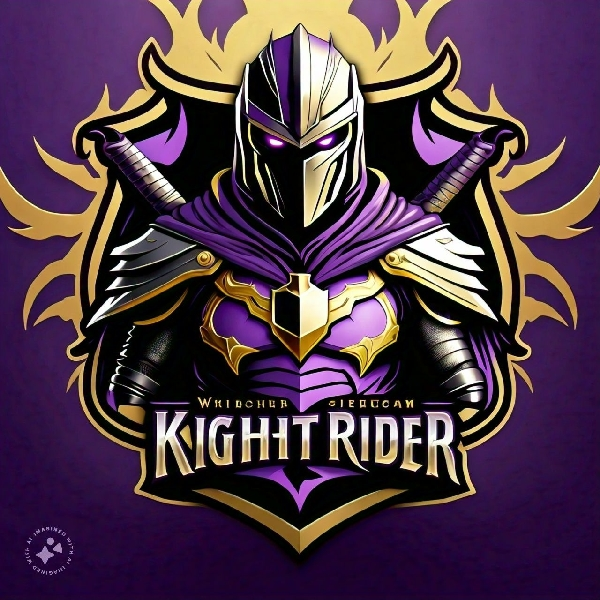

CCSL Season 1
 VSTeam Sunrisers won by 19 runs.
Records
- Most Run: Rejuanur Rahaman
- Most Wikets: Yasin Ali
- Highest Score: Rejuanur Rahaman
- Best Bowl: Yasin Ali
- Most Sixes: Rejuanur Rahaman
- Most Fours: Khandakar Nur Kshif
- Catches: Rejuanur Rahaman
- Runouts: Yasin Ali
- Fastest 50:: Rejuanur Rahaman
- Best partnership: + Rejuanur Rahaman
- Innings 6's: Rejuanur Rahaman
- Innings 4's: Khandakar Nur Kshif
- Bat Average: Rejuanur Rahaman
- Bat Strike Rate: Aiyaz Ahmed
- Best Economy: Aiyaz Ahmed
- Bowl Dots: Shakil Ahmed
- MVP: Shakil Ahmed
hh
If you want to see more details download file or download stumps app.
Download File
Stumps App